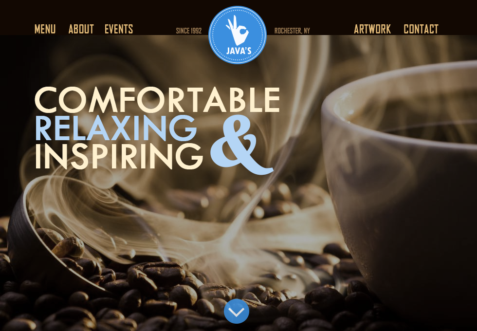
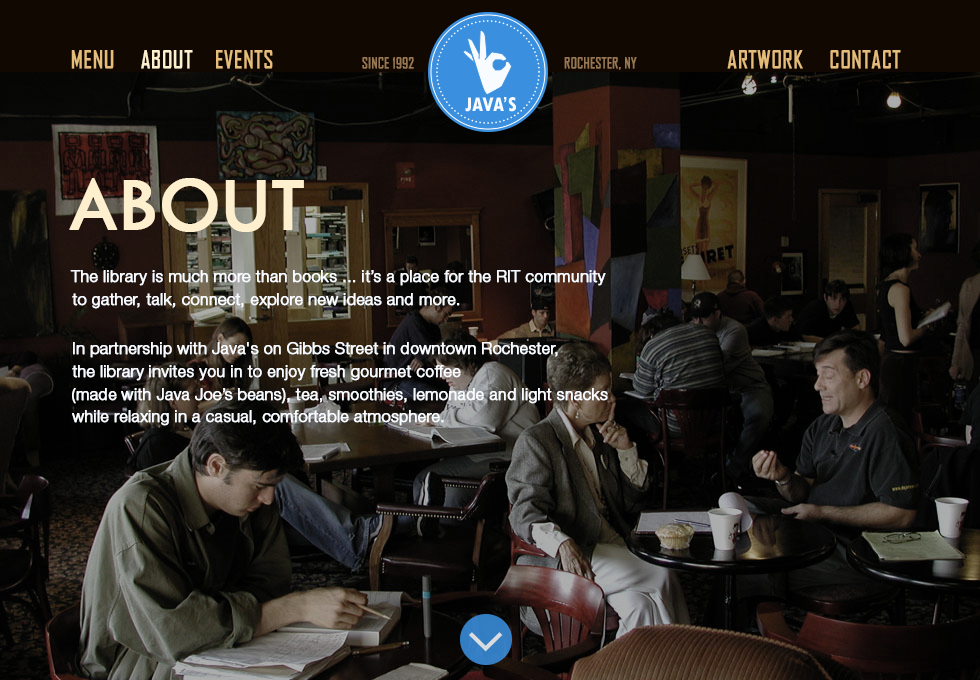
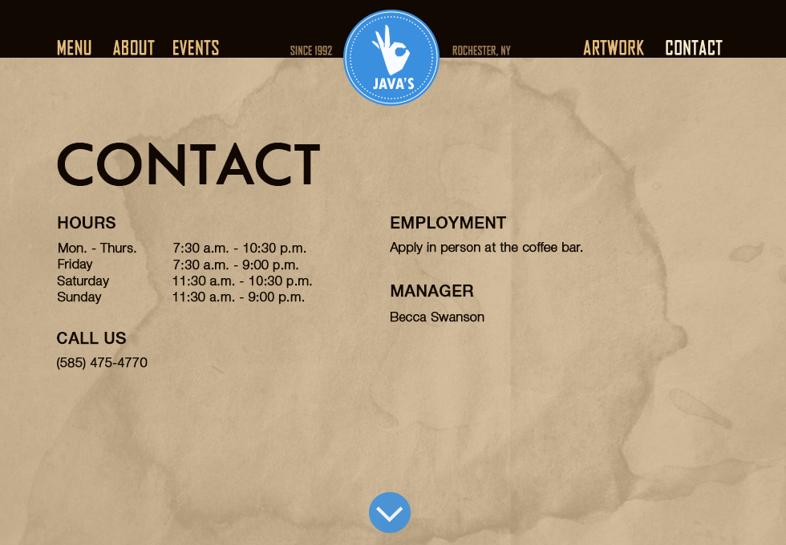

Java's
Website Redesign Group Project | 2014
A group project for my Human-Computer Interactions class. The project was to redesign a website for a small business you thought needed an update. The three of us chose to redesign the website for Java's, a coffee shop on campus. We wrote contextual research and interviewed customers and workers, and also performed competitive analyses. We also came up with personas, concepts, interaction flow, wireframes, and mockups.
 Made in Adobe Photoshop CS6 and Adobe Illustrator CS6.